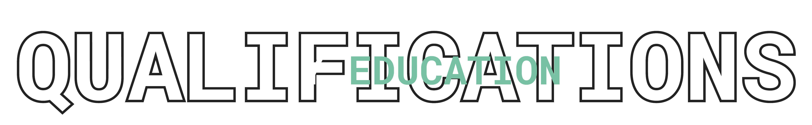
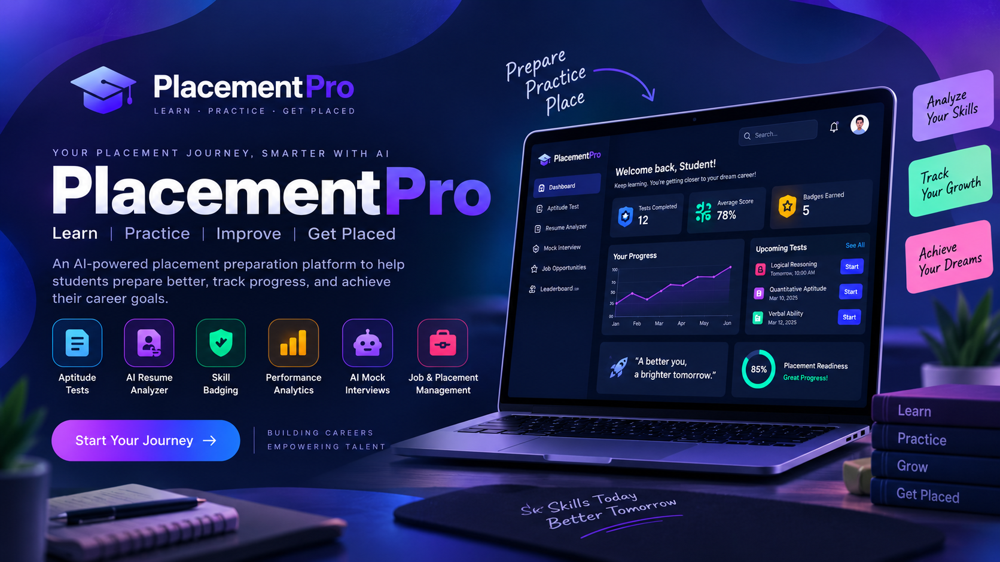
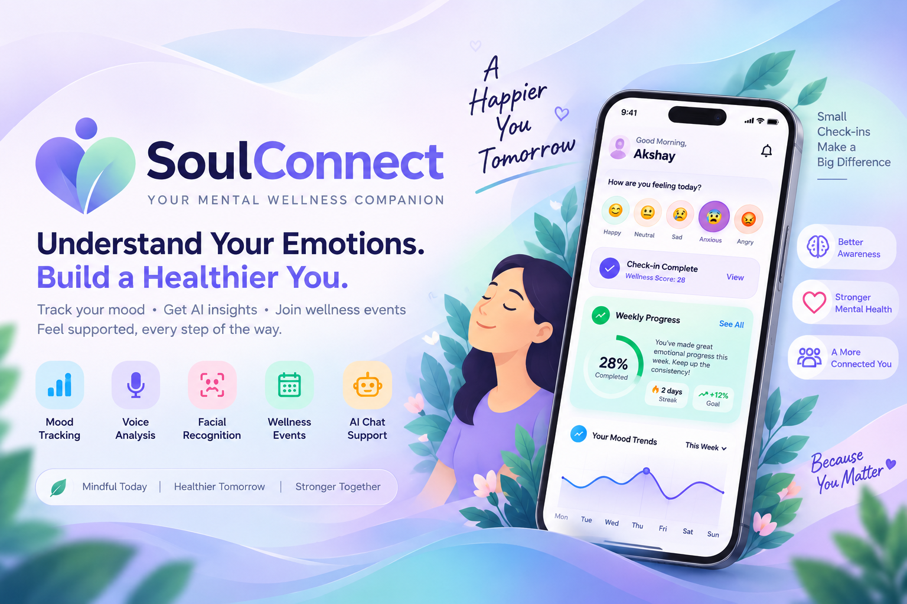
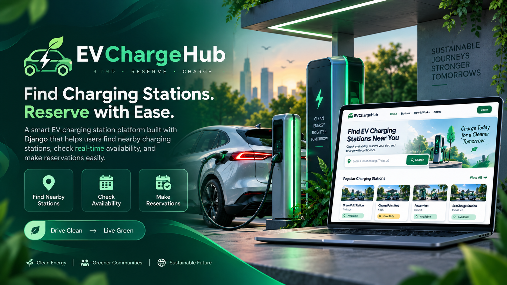
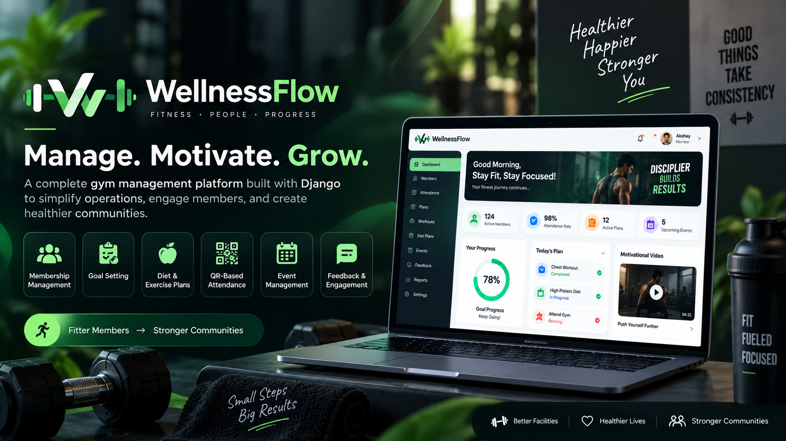
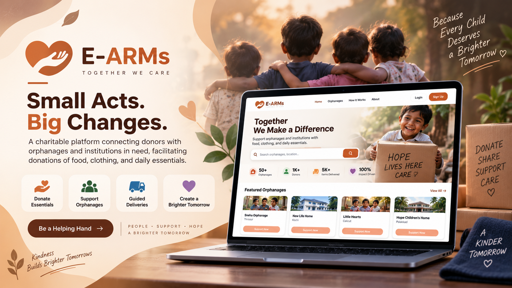
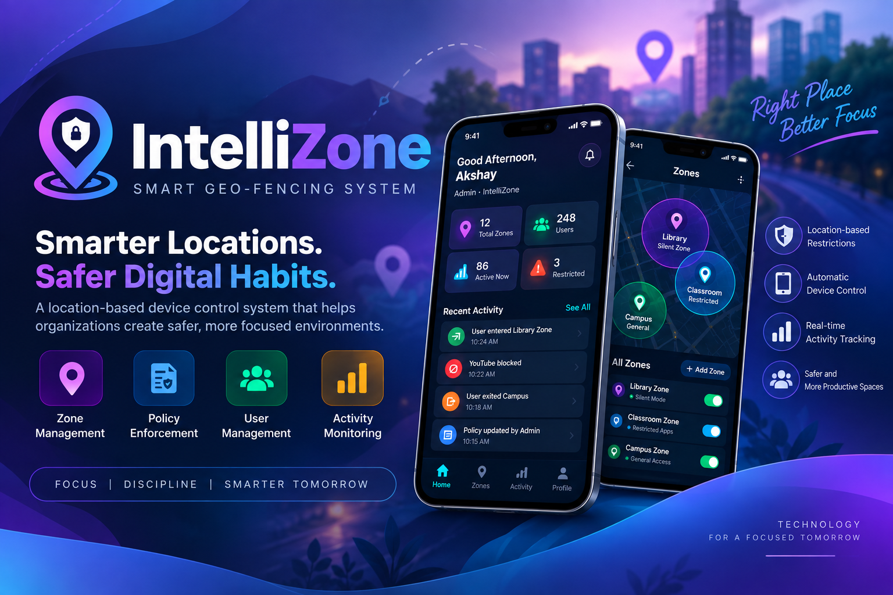

Python DJANGO Full-Stack Developer
Seeking opportunities to showcase my skills



2020
2018
2015
2013

PlacePro — AI-Powered Placement Management System
Developed a Django-based placement management platform connecting students, faculty, recruiters, and administrators. The system provides job management, aptitude tests, student performance analytics, skill badges, resume analysis, and AI-powered mock interviews, with role-based dashboards and backend-driven data management.

College Management System
A comprehensive web-based college management system that centralizes academic and administrative activities. It enables management of faculty, students, courses, timetables, examinations, library services, events, alumni, internal marks, donations, and notifications through dedicated dashboards for different users. The system improves communication, reduces manual work, and provides an efficient digital platform for managing college operations.

CommunityConnect
CommunityConnect is a community management platform that enables members to rent tools, borrow books, manage rental requests, share important notices, and organize community events. Users and admins can create and participate in events, making communication and resource sharing within the community simple and efficient.

Cricscore
CricScore is a cricket management and engagement platform that allows admins to manage teams, players, stadiums, and matches. Users can explore match details, predict the winning probability of teams, and conveniently book tickets for upcoming matches through an integrated ticket booking system.

TeraScan — AI-Powered Soil Image Analysis
TerraScan is an AI-powered agricultural platform that analyzes soil images to provide insights into soil composition, pH, organic matter, and mineral content. It generates soil health reports, predicts potential deterioration, recommends suitable crops, and provides real-time weather, agricultural news, and research management features for farmers and researchers.

SupplyMate – E-Commerce & Supply Management Platform
SupplyMate is a web-based e-commerce and supply management platform that connects customers, retail outlets, delivery units, and administrators. It enables users to browse products, manage carts, place and track orders, while supporting government subsidy-based discounts according to ration card types. The system also provides product and inventory management, outlet and delivery management, order processing, notifications, and sales reports and analytics through a centralized admin dashboard.

SoulConnect – Mental Wellness & Emotion Detection Platform
SoulConnect is a mental wellness platform designed to help users understand and track their emotional well-being. The system provides question-based, voice-based, and facial emotion detection to identify emotions such as happy, sad, neutral, anxious, angry, and stressed. Users can complete daily mood check-ins, monitor mood trends, track personal progress, and participate in wellness events. The platform also includes AI-powered chat support, notifications, and personalized recommendations. An Admin Dashboard allows administrators to manage users and events, monitor mood analytics, review chat activity, manage notifications, and generate reports. The application is developed using Flutter for the frontend, Django/Python for the backend, and machine-learning models for emotion analysis.

EV Charging station using django
By using this website users can find nearby charging stations, check availability, and make reservations. This service is especially beneficial in busy areas or during peak travel times.

Personalized Music Recommendation with AI
Developed an AI-powered music recommendation system that provides personalized song suggestions based on the user’s mood, listening preferences, time of day, location, and weather conditions. The system uses contextual information and user interaction data to generate relevant music recommendations and integrates external music APIs for accessing content. The project was developed with a focus on intelligent personalization, real-time context awareness, and an engaging user experience.

Wellnessflow (GYM Management Project) using django
Wellnessflow is a comprehensive website designed to streamline the management of fitness and health clubs, offering features like membership registration, personalized goal setting, diet and exercise plans, and QR-based attendance tracking. It enhances user engagement with motivational content, feedback options, and event management for a seamless fitness experience.

E-ARMs (Charity Project) using django
The E-Arms project is a charitable platform connecting donors with orphanages and institutions in need, facilitating donations of food, clothing, and daily essentials. Through a streamlined system, guides help deliver resources, ensuring support reaches those who need it most.

IntelliZone – Smart Geo-Fencing System
Developed a Flutter and Django-based geo-fencing application that automatically applies location-based device restrictions. Administrators can create and manage zones, configure rules, assign zones to users, and monitor activities, while users can view their current zone, restrictions, activity history, and profile. The system uses GPS-based location tracking and geo-fencing to provide real-time zone detection and automated policy enforcement.

Smart Study Lock
Smart Study Lock is an AI-powered parental learning enforcement application designed to reduce smartphone distractions among students. Parents can upload study materials, schedule learning sessions, and monitor their child’s progress. The system uses Transformer-based question generation to create quizzes from study content and CNN-based facial verification to authenticate the student before the quiz. Entertainment apps remain locked until the student completes the required study session and passes the quiz. Parent-verified emergency logout, and centralized admin monitoring. Built using Flutter, Django, Python, and MySQL, the project combines education, AI, security, and smartphone usage control into a single platform.